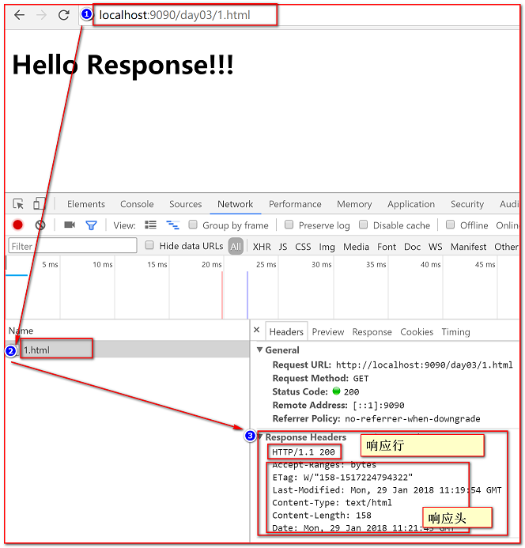
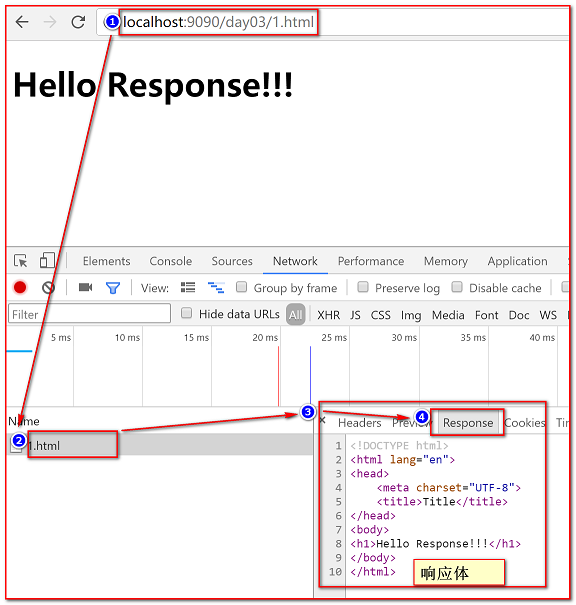
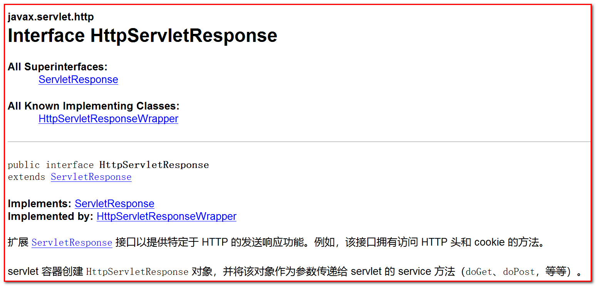
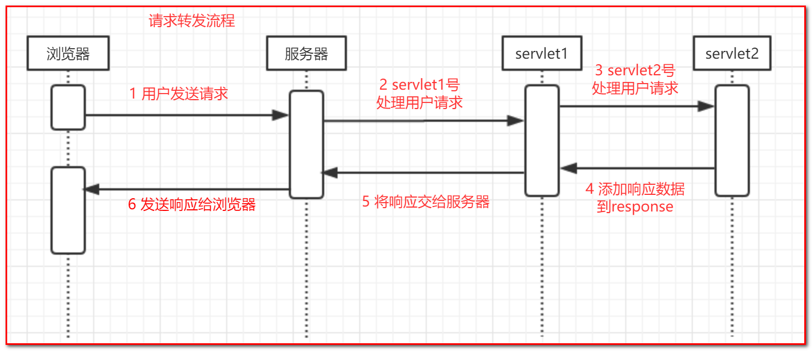
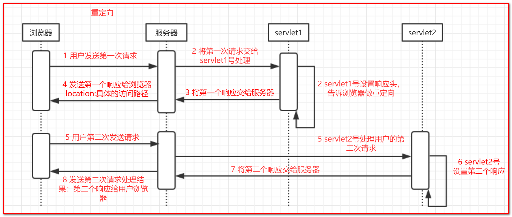
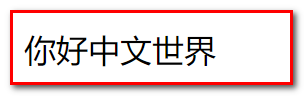

response学习
第1章 响应信息的组成部分
在前面我们学习过了http协议与请求相关的内容，那么接下来的任务就是要完成响应部分的学习。
1.1 http协议中的响应
使用浏览器开发工具查看响应
和的之前学习的http协议中的请求一样，响应也分成三个部分——响应行（状态行）、响应头、响应体。我们的学习也是按照这个思路进行。
我们先来看一下这三部分内容：

上图展示了响应行和响应头，那么还有响应体在哪里呢？下图展示了响应体如何查看：

注意：谷歌浏览器并没有将响应的所有内容都放在一起，所以响应体的内容需要单独在response标签页查看 由上图可知，那么既然分成三个部分，因此，我们的学习也是一步一步来，我们来学习下response对象,学起下response对象如何操作这三个部分。
第2章 response对象操作响应信息
2.1 response对象的概念
2.1.1 什么是response对象
我们要学习使用response对象，先要了解它，我们先来看下官方文档截图：

总结：HttpServletResponse对象封装了向客户端发送数据、发送响应头，发送响应状态码的方法。开发人员必须学会使用HttpServletResponse，才能给浏览器发送数据。2.2 response操作响应行
2.2.1 响应行的组成
响应行是http响应内容的第一行。
响应行一般数据为：HTTP/1.1 200（tomcat8.5） 或者 HTTP/1.1 200 OK（tomcat7）
响应行分为三个部分：
HTTP/1.1：协议版本
200：响应状态码
OK：对响应状态码的解释
2.2.2 常见的响应状态码：
200 OK 请求已成功，请求所希望的响应头或数据体将随此响应返回。出现此状态码是表示正常状态。302 Move temporarily 重定向，请求的资源临时从不同的 URI响应请求。304 Not Modified 从缓存中读取数据，不从服务器重新获取数据。403 Forbidden 服务器已经理解请求，但是拒绝执行它，一般在权限不够的时候常见。404 Not Found 请求失败，请求所希望得到的资源未被在服务器上发现。405 Method Not Allowed 请求行中指定的请求方法不能被用于请求相应的资源。500 Internal Server Error 服务器遇到了一个未曾预料的状况，导致了它无法完成对请求的处理。以上就是我们常用的响应状态码，了解了http协议有关响应行的部分，对于response对象来说 , 只有响应状态码可以操作 , 并且我们一般也不操作状态码 。
2.2.3 API介绍
void setStatus(int sc) 设置响应的状态代码(一般用来设置 1xx 2xx 3xx)
void sendError(int sc) 设置响应的状态代码(一般用来设置 4xx 5xx)注意 : 状态码的一般不需要我们手动设置
2.3 response操作响应头
2.3.1 常见的响应头介绍
响应头有很多 , 我们先来看自己大家必须知道的响应头
location ：
重定向操作：通常告知浏览器马上向该地址发送请求，通常和响应码302 一起使用
refresh :
定时刷新操作 , 指定时间后跳转到指定页面
content-encoding ：
设置当前数据的压缩格式，告知浏览器以何种压缩格式解压数据
content-disposition ：
通知浏览器以何种方式获取数据（直接解析数据（网页，图片文本），或者以附件方式（下载文件））
content-type ：
实体头部用于指示资源的MIME类型（MIME类型：用于提示当前文件的媒体类型，例如图片为 : image/png 、音频为:audio/ogg）。它的作用与传统上Windows上的文件扩展名相同。该名称源于最初用于电子邮件的MIME标准。）
注意：我们content-type常用的设置一般都是“text/html;charset=utf-8”，其中“text/html”用来设置浏览器以指定文件格式解析数据；“charset=utf-8”用来响应数据的编码表,若不需要设置编码可以不写。2.3.2 API 介绍
void setHeader(String name, String value) 用给定名称和值设置响应头
void sendRedirect(String location) 用类设置重定向 接下来我们通过几个案例，让大家来练习使用下方法和响应头。
2.3.3 案例1：使用location响应头实现跳转(重定向)
案例需求
使用location响应头实现重定向跳转淘宝主页www.taobao.com
案例分析
创建servlet
使用response对象，发送location消息头和302响应码给浏览器
代码实现
package cn.itcast.web;
import javax.servlet.ServletException;
import javax.servlet.annotation.WebServlet;
import javax.servlet.http.HttpServlet;
import javax.servlet.http.HttpServletRequest;
import javax.servlet.http.HttpServletResponse;
import java.io.IOException;
//urlPatterns = "/redirect"
public class RedirectServlet extends HttpServlet {
protected void doPost(HttpServletRequest request, HttpServletResponse response) throws ServletException, IOException {
doGet(request, response);
}
protected void doGet(HttpServletRequest request, HttpServletResponse response) throws ServletException, IOException {
//设置重定向响应头
// response.setHeader("location","http://www.taobao.com");
//设置状态码
//response.setStatus(302);
//============上面代码的简化方式======================
response.sendRedirect("http://www.taobao.com");
}
}2.3.4 请求转发与请求重定向的区别
完成重定向操作之后，同学们心里有一个疑问：之前学习的转发和现在的重定向都可以完成跳转，那么他们之间有什么区别呢？
我们将转发和重定向的流程制作了时序图给大家展示：


通过上图，我们可以简单总结几点转发和重定向的区别：
- 转发在一次请求中完成，重定向是两次请求
- 转发操作发生在服务器内部，重定向是浏览器执行操作
- 转发地址栏不变（只有一次请求，一个地址），重定向，地址栏变化（两次请求，两个地址）
- 转发可以在一次请求中共享数据，重定向不行（重定向两次请求）。
2.3.5 案例2 : 3秒钟之后跳转到其他页面
案例需求
在当前页面停留3秒钟之后跳转到京东首页
案例分析
- 创建RefreshServlet
- 调用setHeader，设置消息头（”Refresh”,” 3;url=http://www.jd.com"）
代码实现
package cn.itcast.web;
import javax.servlet.ServletException;
import javax.servlet.annotation.WebServlet;
import javax.servlet.http.HttpServlet;
import javax.servlet.http.HttpServletRequest;
import javax.servlet.http.HttpServletResponse;
import java.io.IOException;
//urlPatterns = "/refresh"
public class RefreshServlet extends HttpServlet {
protected void doPost(HttpServletRequest request, HttpServletResponse response) throws ServletException, IOException {
doGet(request, response);
}
protected void doGet(HttpServletRequest request, HttpServletResponse response) throws ServletException, IOException {
//自动刷新操作，在3秒后跳转京东主页
response.setHeader("Refresh"," 3;url=http://www.jd.com");
}
}另外几个响应头 , 我们需要学习完response操作响应体之后才可以操作.
2.4 response操作响应体
响应体页面上的要展示的html的代码了
2.4.1 API介绍
ServletOutputStream getOutputStream() 获取字节输出流
PrintWriter getWriter() 获取字符输出流注意:两个流不能同时使用(互斥),这两个流使用完成后如果没有关闭,Servlet容器会帮我们将其关闭
2.4.2 案例1：向浏览器输出中文数据(无乱码)
案例需求
向页面输出中文数据没有乱码
案例效果

案例分析
- 创建servlet
- 使用response对象，调用setContentType方法传入参数：“text/html;charset=utf-8”
- 使用response对象，向页面输出“你好中文世界”
代码实现
package cn.itcast.web;
import javax.servlet.ServletException;
import javax.servlet.annotation.WebServlet;
import javax.servlet.http.HttpServlet;
import javax.servlet.http.HttpServletRequest;
import javax.servlet.http.HttpServletResponse;
import java.io.IOException;
@WebServlet(name = "EncodingServlet",urlPatterns = "/encoding")
public class EncodingServlet extends HttpServlet {
protected void doPost(HttpServletRequest request, HttpServletResponse response) throws ServletException, IOException {
doGet(request, response);
}
protected void doGet(HttpServletRequest request, HttpServletResponse response) throws ServletException, IOException {
response.setContentType("text/html;charset=utf-8");
response.getWriter().write("你好中文世界");
}
}
2.4.3 案例2：以附件形式下载文件
案例需求
完成文件下载功能。
案例效果
用户点击页面的链接，浏览器开始下载文件。
案例分析
- 创建一个页面，展示所有要被下载文件的链接
- 链接将要下载的文件名称，发送给服务器的servlet，让servlet进行处理
- 服务器加载文件资源
- 提示浏览器，以下载的方式，获取服务器资源
- 使用IO的方式，将文件数据输出到浏览器（response.getOutputStream()）
代码实现
html页面
<!DOCTYPE html> <html lang="en"> <head> <meta charset="UTF-8"> <title>Title</title> <script> function isIE(){ //获取当前浏览器相关信息 var explorer = window.navigator.userAgent.toLowerCase() ; //判断是否是ie浏览器 if (explorer.indexOf("msie") >= 0 || explorer.indexOf("rv:11.0) like gecko") >= 0) { return true; }else { return false; } } window.onload = function () { if(isIE()){ //在是IE浏览器的情况下，对中文请求参数编码 var str = document.getElementById("ww").href; var str = encodeURI(str); document.getElementById("ww").href = str; } }; </script> </head> <body> <a href="/day03/download?fileName=1.jpg">1.jpg</a> <a href="/day03/download?fileName=2.txt">2.txt</a> <a href="/day03/download?fileName=传智播客.txt">传智播客.txt</a> </body> </html>
- servlet演示代码
package cn.itcast.web;
import javax.servlet.ServletContext;
import javax.servlet.ServletException;
import javax.servlet.ServletOutputStream;
import javax.servlet.annotation.WebServlet;
import javax.servlet.http.HttpServlet;
import javax.servlet.http.HttpServletRequest;
import javax.servlet.http.HttpServletResponse;
import java.io.File;
import java.io.FileInputStream;
import java.io.IOException;
import cn.itcast.utils.DownLoadUtils;
//urlPatterns = "/download"
public class DownLoadServlet extends HttpServlet {
protected void doPost(HttpServletRequest request, HttpServletResponse response) throws ServletException, IOException {
doGet(request, response);
}
protected void doGet(HttpServletRequest request, HttpServletResponse response) throws ServletException, IOException {
//1 获取要下载的文件名称
String fileName = request.getParameter("fileName");
System.out.println(fileName);
//2 加载当前文件
// 注意：需要动态的获取当前文件的目录位置（即使服务器所在目录发生变化，我也可以获取到准确位置）
// 我们需要使用servletContext , 最后一节课讲解，获取资源路径
ServletContext context = getServletContext();
String realPath = context.getRealPath("/download");
File file = new File(realPath,fileName);
//3 提示浏览器，以下载的方式，获取服务器资源
//响应消息头设置：
//Content-Type 设置文件媒体格式 getMimeType：1.txt 2.jpg 获取文件的后缀名
response.setContentType(getServletContext().getMimeType(fileName));
//4 处理中文文件名乱码问题
// 获取浏览器类型，通过请求头中的User-Agent来判断
fileName = DownLoadUtils.getName(request.getHeader("user-agent"), fileName);
//Content-Disposition 设置要被下载的文件名
response.setHeader("Content-Disposition", "attachment;filename=" + fileName);
//5 将指定文件使用IO技术，向浏览器输出
FileInputStream in = new FileInputStream(file);
ServletOutputStream out = response.getOutputStream();
//6 标准IO代码
byte[] buf = new byte[1024];
int len = -1;
while((len = in.read(buf)) != -1) {
out.write(buf, 0, len);
}
in.close();
}
}DownloadUtils中的代码(复制即可)
package cn.itcast.utils; import java.io.UnsupportedEncodingException; import java.net.URLEncoder; import sun.misc.BASE64Encoder; /* * 根据浏览器的内核,对下载的文件名称进行处理 火狐浏览器使用base64编码 其他都使用url编码 */ public class DownLoadUtils { public static String getName(String agent, String filename) throws UnsupportedEncodingException { if (agent.contains("Firefox")) { // 火狐浏览器 BASE64Encoder base64Encoder = new BASE64Encoder(); filename = "=?utf-8?B?" + base64Encoder.encode(filename.getBytes("utf-8")) + "?="; } else { // 其它浏览器 filename = URLEncoder.encode(filename, "utf-8"); } return filename; } }
2.4.4 案例3：点击切换验证码
案例需求
在页面展示登录验证码,点击此验证码可以更换新的验证码
案例分析
- 创建一个登录页面页面，展示验证码图片
- 配置今天资料中提供的servlet输出验证码图片
- 设置页面的点击事件，触发点击事件就重新获取验证码图片
代码实现
html页面
<!DOCTYPE html> <html lang="en"> <head> <meta charset="UTF-8"> <title>Title</title> </head> <body> <form action="/day03/login" method="post"> <table> <tr> <td>用户名</td> <td><input type="text" name="username"/></td> </tr> <tr> <td>密码</td> <td><input type="password" name="password"/></td> </tr> <tr> <td>验证码：</td> <td><input type="password" name="checkcode"/></td> </tr> <tr> <td></td> <td><img id="img" src="/day03/checkcode"/></td> </tr> <tr> <td></td> <td><input type="submit" value="登录"/></td> </tr> </table> </form> </body> </html>
复制验证码servlet ,别忘记在web.xml中配置
package cn.itcast.web; import java.awt.Color; import java.awt.Font; import java.awt.Graphics; import java.awt.image.BufferedImage; import java.io.IOException; import java.util.Random; import javax.imageio.ImageIO; import javax.servlet.ServletException; import javax.servlet.annotation.WebServlet; import javax.servlet.http.HttpServlet; import javax.servlet.http.HttpServletRequest; import javax.servlet.http.HttpServletResponse; //urlPatterns = "/checkcode" public class CheckcodeServlet extends HttpServlet { private static final long serialVersionUID = 1L; protected void doGet(HttpServletRequest request, HttpServletResponse response) throws ServletException, IOException { // 创建画布 int width = 120; int height = 40; BufferedImage bufferedImage = new BufferedImage(width, height, BufferedImage.TYPE_INT_RGB); // 获得画笔 Graphics g = bufferedImage.getGraphics(); // 填充背景颜色 g.setColor(Color.white); g.fillRect(0, 0, width, height); // 绘制边框 g.setColor(Color.red); g.drawRect(0, 0, width - 1, height - 1); // 生成随机字符 // 准备数据 String data = "ABCDEFGHIJKLMNOPQRSTUVWXYZabcdefghijklmnopqrstuvwxyz1234567890"; // 准备随机对象 Random r = new Random(); // 声明一个变量 保存验证码 String code = ""; // 书写4个随机字符 for (int i = 0; i < 4; i++) { // 设置字体 g.setFont(new Font("宋体", Font.BOLD, 28)); // 设置随机颜色 g.setColor(new Color(r.nextInt(255), r.nextInt(255), r.nextInt(255))); String str = data.charAt(r.nextInt(data.length())) + ""; g.drawString(str, 10 + i * 28, 30); // 将新的字符 保存到验证码中 code = code + str; } // 绘制干扰线 for (int i = 0; i < 6; i++) { // 设置随机颜色 g.setColor(new Color(r.nextInt(255), r.nextInt(255), r.nextInt(255))); g.drawLine(r.nextInt(width), r.nextInt(height), r.nextInt(width), r.nextInt(height)); } // 将验证码 打印到控制台 System.out.println(code); // 将验证码放到session中 request.getSession().setAttribute("code_session", code); // 将画布显示在浏览器中 ImageIO.write(bufferedImage, "jpg", response.getOutputStream()); } protected void doPost(HttpServletRequest request, HttpServletResponse response) throws ServletException, IOException { doGet(request, response); } }
设置页面点击事件的js代码
<script> window.onload = function () { var img = document.getElementById("img"); img.onclick=function () { img.src="/day03/checkcode?r="+new Date().getTime(); }; }; </script>
第3章 servletContext
在之前的文件下载案例中，我们使用过了一个对象：servletContext。虽然简单的使用过，但是，想要了解这个对象，我们还需要进一步的学习servletContext。
3.1 ServletContext的概述
ServletContext是一个容器（域对象）可以存储键值对数据（String key,Object value），保存在ServletContext中的数据不仅可以提供给所有的servlet使用，而且可以在整个项目范围内使用（后期的过滤器、监听器也可以使用ServletContext）。
3.2 ServletContext作为域对象
ServletContext中定义了很多方法，在javaweb阶段我最常用的就是将ServletContext作为容器（域对象）使用，因此，接下来我们要学习这个容器（域对象的）API。
3.2.1 API介绍
GenericServlet：
1. ServletContext getServletContext()
获取ServletContext对象ServletContext：
1. void setAttribute(String name, Object object)
往servletcontext容器中存入数据，name为数据名称，object为数据的值
2. Object getAttribute(String name)
从ServletContext中获取数据，根据指定的数据名称
3. void removeAttribute(String name)
从ServletContext中移除数据，根据指定的数据名称3.2.2 使用步骤
- 创建ServletContextServlet1和ServletContextServlet2
- ServletContextServlet1调用存方法
- ServletContextServlet2调用取方法
- ServletContextServlet2调用删方法
- ServletContextServlet2调用取方法
3.2.4 演示代码
ServletContextServlet1：
package cn.itcast.web;
import javax.servlet.ServletContext;
import javax.servlet.ServletException;
import javax.servlet.annotation.WebServlet;
import javax.servlet.http.HttpServlet;
import javax.servlet.http.HttpServletRequest;
import javax.servlet.http.HttpServletResponse;
import java.io.IOException;
//urlPatterns = "/context1"
public class ServletContextServlet1 extends HttpServlet {
protected void doPost(HttpServletRequest request, HttpServletResponse response) throws ServletException, IOException {
doGet(request, response);
}
protected void doGet(HttpServletRequest request, HttpServletResponse response) throws ServletException, IOException {
//获取容器
ServletContext context = getServletContext();
//存入数据
context.setAttribute("addr","北京");
}
}
ServletContextServlet2：
package cn.itcast.web;
import javax.servlet.ServletContext;
import javax.servlet.ServletException;
import javax.servlet.annotation.WebServlet;
import javax.servlet.http.HttpServlet;
import javax.servlet.http.HttpServletRequest;
import javax.servlet.http.HttpServletResponse;
import java.io.IOException;
//urlPatterns = "/context2"
public class ServletContextServlet2 extends HttpServlet {
protected void doPost(HttpServletRequest request, HttpServletResponse response) throws ServletException, IOException {
doGet(request, response);
}
protected void doGet(HttpServletRequest request, HttpServletResponse response) throws ServletException, IOException {
//获取容器
ServletContext context = getServletContext();
//获取数据
String addr = (String) context.getAttribute("addr");
System.out.println("存入之后，获取数据："+addr);
//移除数据
context.removeAttribute("addr");
//重新获取数据
String addr2 = (String) context.getAttribute("addr");
System.out.println("移除之后，获取数据："+addr2);
}
}
代码准备好之后，分别访问context1和context2，我们会得到一下结果：
存入之后，获取数据：北京
移除之后，获取数据：null
通过这个结果，我们发现两次请求虽然访问了不同的servlet，但是依然能通过ServletContext共享数据，而且即使是由一个同学先访问，然后由另一个同学访问也是同样的结果。
总结：保存在ServletContext中的数据是项目全局共享的数据。
3.3 ServletContext作用总结
ServletContext对象一共两个作用：
- 可以读取资源在当前项目中的文件位置
- 可以作为域对象在项目全局范围内提供共享数据